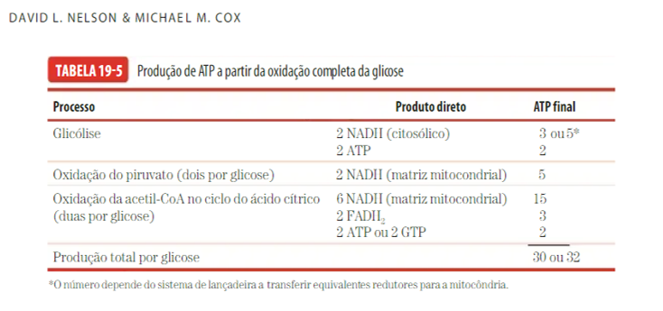

<ion-header>
    <ion-navbar color="primary">
      <ion-buttons left>
        <button ion-button icon-only menuToggle>
          <ion-icon name="menu"></ion-icon>
        </button>
      </ion-buttons>
      <ion-title>PRODUÇÃO DE ATP A <br> PARTIR DA OXIDAÇÃO <br> COMPLETA DA GLICOSE </ion-title>
    </ion-navbar>
  </ion-header>


<ion-content padding>

<h6>Resultado líquido das etapas de glicólise e ciclo de krebs da respiração celular. </h6>



</ion-content>
